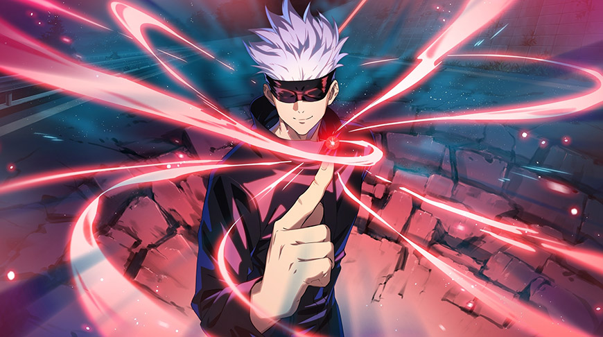
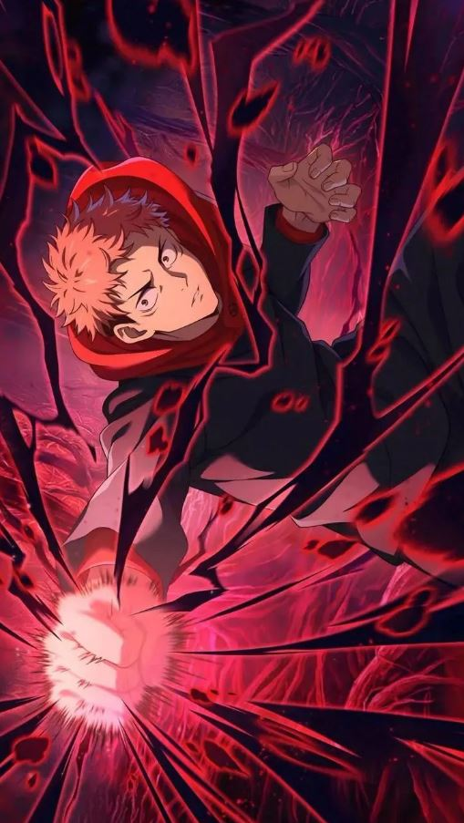
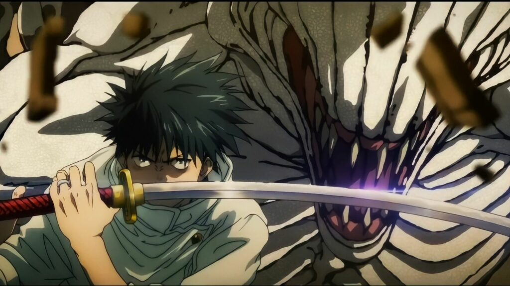

3 Nhân vật tui thích.
- Gojo Satoru - Chú thuật sư mạnh nhất hiện tại.
- Itadori Yuji - Là học trò của Gojo và là main.
- Yuta - Sở hữu Rika siêu mạnh.
Hình ảnh của các nhân vật



Thông tin chi tiết
Nếu bạn muốn tìm hiểu thêm về cốt truyện và các nhân vật khác, hãy truy cập: JJK Fandom Wiki.